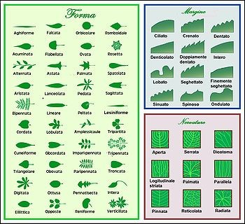
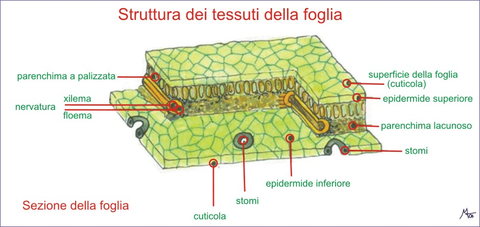
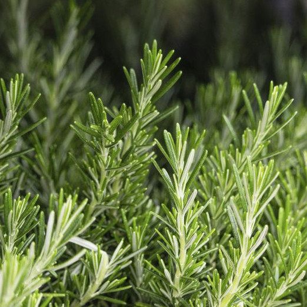
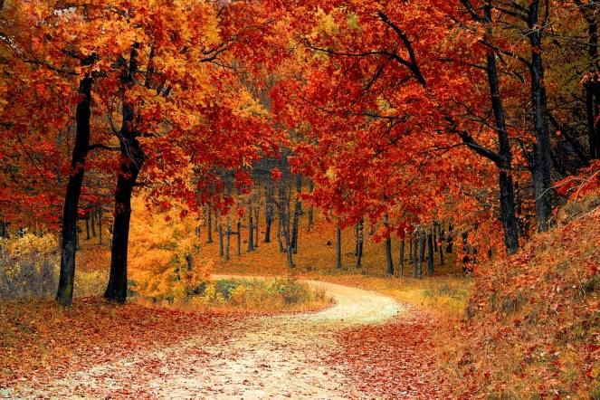
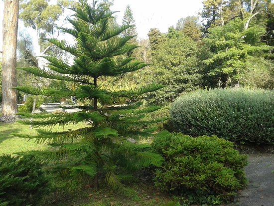

La foglia
da WIKI ISG, l'enciclopedia libera dell'Istituto San Giuseppe
Se osserviamo una pianta, nella maggior parte dei casi il nostro sguardo viene attratto dal suo fogliame.
Tranne rari casi (pensiamo al cactus per esempio), le piante sono dotate di foglie che sono suoi organi
indispensabili. Le foglie sono delle lamine verdi poste sul fusto della pianta in modo che possano catturare
la luce solare al meglio, possibilmente senza farsi ombra l’una con l’altra.
Attraverso la foglia avvengono i processi di:
- fotosintesi clorofilliana: grazie alla clorofilla e alla luce solare, le foglie trasformano l’acqua
e l’anidride carbonica (che sono sostanze semplici) in sostanze complesse, fondamentali per la vita della pianta
- respirazione
- traspirazione e conseguente perdita di vapore acqueo: attraverso le foglie, le piante eliminano all’esterno l’acqua assorbita dalle radici
- riserva di alimenti e acqua

Le parti fondamentali della struttura della foglia sono:
- Le stipole: due appendici presenti alla base della foglia, non sempre presenti.
- Il picciolo: è il punto di incontro tra la foglia e il ramo. La forma varia da pianta a pianta ma in genere si presenta in forma cilindrica, di lunghezza variabile. Al suo interno sono presenti i vasi conduttori che arrivano dal fusto della pianta. Non tutte le foglie hanno il picciolo; quelle sprovviste si inseriscono direttamente nel fusto e si chiamano sessili (nel mais ad esempio)
- La lamina (o lembo): la parte piatta della foglia, percorsa da nervature. La lamina è composta dalla pagina superiore di colore verde intenso e dalla pagina inferiore di una tonalità di verde più chiaro. La funzione principale è di “catturare” la luce.
- Le nervature: sono parti spesso visibili ad occhi nudo, formano una ramificazione di vasi conduttori che partono dal picciolo, si assottigliano man mano che si avvicinano alla parte più esterna della foglia. Sono importanti sia come struttura di sostegno sia per la funzione di trasporto della linfa grezza ed elaborata.

L’anatomia della foglia:
Osservata al microscopio, è possibile notare che la foglia è un organo della pianta dalla struttura ordinata e organizzata.
- Epidermide superiore: è uno strato di cellule attraversate dalla luce.
- Cuticola: si trova nella pagina superiore, è uno strato protettivo e impermeabile. E’ ricoperto da una sostanza cerosa detta cutina.
- Tessuto a palizzata: è uno strato formato da cellule cilindriche allungate contenenti molti cloroplasti. E’ il luogo dove si concentra di più la fotosintesi. Contiene ampi spazi intercellulari.
- Sistema dei vasi: sono presenti due tipi di vasi. Legnosi con la funzione di trasporto di acqua e sali minerali provenienti dalla radice. Cibrosi impegnati nella raccolta di zuccheri prodotti nella foglia. I vasi della foglia sono collegati ai vasi del fusto attraverso il picciolo.
- Tessuto lacunoso: è uno strato composto da cellule rotonde, negli spazi liberi avvengono gli scambi gassosi.
- Stomi: sono aperture microscopiche fotosensibili. Di giorno rimangono aperti permettendo gli scambi gassosi della fotosintesi, di notte, al buio, rimangono chiusi. Regolano la fuoriuscita di vapore acqueo e l’entrata di ossigeno e anidride carbonica.
Foglie dalla struttura particolare
La pianta ha adattato la propria struttura a seconda delle proprie necessità, di conseguenza anche la struttura fogliare subisce condizionamenti. Il faggio, ad esempio, ha una chioma con foglie di luce esterne più esposte ai raggi del sole e al vento con conseguente facilità al disseccamento; per contrastare questa tendenza le foglie esterne presentano un ispessimento dell’epidermide mentre le foglie d’ombra sottostanti che sono protette dall’azione degli agenti atmosferici, sono flaccide, chiare e più espanse.
Necessariamente la pianta deve adattarsi anche all’habitat in cui si trovava.
- In ambienti aridi le piante tendono a trasformare le proprie foglie in spine per evitare la perdita di acqua. E’ il fusto carnoso che svolge la funzione della fotosintesi clorofilliana. Il fusto è al tempo stesso “riserva” di acqua. Inoltre le spine preservano la pianta, difendendola dagli erbivori. Esempio: il cactus.
- Nella macchia mediterranea il clima è caratterizzato da estati calde e secche. Le foglie delle piante presentano una spessa cuticola (ad esempio il lauro) o una lamina fogliare stretta (come il rosmarino e la lavanda), altre volte ancora possiedono peli sulla parte inferiore che hanno la funzione di ridurre la traspirazione (salvia). Esistono piante che conservano una riserva di acqua nelle foglie carnose (fico degli Ottentotti), altre ancora sono dotate di supporti per attaccarsi ai sostegni (come nel caso delle piante rampicanti: vite, glicine, edera).

- Tra le piante con caratteristiche curiose ci sono le piante carnivore (o insettivore). Si tratta di piante che intrappolano e consumano protozoi e animali (soprattutto insetti) per ottenere nutrienti necessari alla loro crescita. Le piante carnivore vivono in ambienti solitamente poveri di sali azotati e in presenza di terreni con forte acidità. Sopperiscono a questa mancanza con la digestione di proteine animali. Ne esistono circa 600 specie in tutto il mondo. Un esempio è la Dionea che si chiude a scatto quando un insetto si posa sopra.
Pianta Carnivora
Caducifoglie e sempreverdi

D’inverno, con la diminuzione delle temperature esterne, la pianta assorbe meno acqua di conseguenza le foglie non devono più traspirare per non perdere quella poca acqua assorbita dalle radici e dunque cadono. Inoltre in inverno, la luce solare diminuisce, la pianta “richiama” i granuli di clorofilla, spostandoli ai rami e al tronco, per mantenere la sua sopravvivenza e non sprecare le poche risorse.
Le foglie perdono il colore verde, compaiono gli altri pigmenti della foglia (rosso, arancione, giallo) fin quando si seccano e cadono alla base del piccolo. La cicatrice derivata dalla caduta della foglia viene coperta con del sughero affinchè non entrino batteri e funghi.
Spesso le foglie vengono aiutate a staccarsi dalla pianta dell’azione degli agenti atmosferici come la pioggia, il vento, la neve.

La caduta delle foglie è caratteristica degli alberi a foglia larga (latifoglie) mentre è un fenomeno raro per le conifere sempreverdi. Quest’ultime si sono adattate al clima, per la conservazione riducono la traspirazione, conservando le foglie durante tutte le quattro stagioni dell’anno.
Nel caso delle conifere la foglia riduce i tessuti al minimo spessore, assicurando una discreta fotosintesi clorofilliana ma con una superficie talmente ridotta che è difficile che i fiocchi di neve riescano ad appoggiarsi. Anche i vasi linfatici contribuiscono alla conservazione della pianta: i vasi linfatici sono ispessiti per evitare che i liquidi all’interno si ghiaccino. Il loro punto di congelamento è inferiore agli alberi caducifoglia.
Le piante sempreverdi sono generalmente legnose, alberi, arbusti o cespugli. Sono diffuse nelle zone a clima tropicale o a clima freddo laddove questo non metta in pericolo di vita la pianta. Molte specie della macchia mediterranea sono sempreverdi.
La pianta che mantiene le foglie avrà il vantaggio di ottimizzare le energie, non dovendo rimettere il fogliame in primavera e non “spreca” energia. Le foglie vengono rinnovate a fine ciclo (ogni 3-6 anni a seconda della specie).
Lo svantaggio di un sempreverde è il rischio di rottura dei rami sotto il peso della neve ma anche la mortalità della pianta nel caso di geli intensi e prolungati nel tempo.
Molte piante sempreverdi tollerano perfino il gelo grazie alla cutina, una sostanza cerosa che favorisce lo scivolamento dell’acqua dalla lamina, isolando allo stesso tempo l’interno.
Alcune specie di piante si comportano diversamente a seconda se vivono in ambienti caldi o freddi.
Alcuni esempi:
- Alberi latifogli a foglie caduche: acero, betulla, quercia, pioppo, castagno, platano, fico, nespolo, ciliegio, pero, olmo, tiglio.
- Alberi aghifoglie a foglie caduche: larice, tassodio, metasequoia.
- Conifere: cedro, pino, cipresso, pino, abete, tasso, ginepro
- Piante sempreverdi latifoglie: agrifoglio, leccio, camelie, laurotino.
 Torna alla pagina principale
Torna alla pagina principale